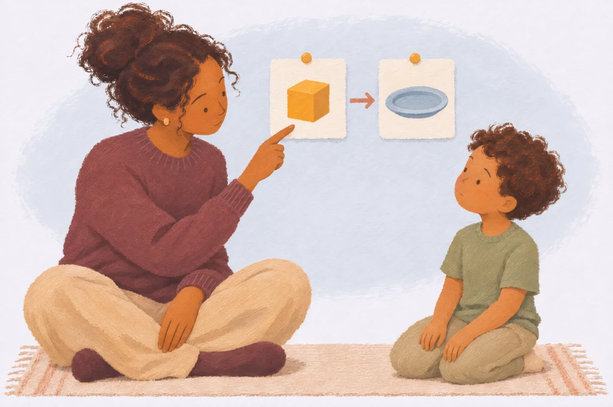
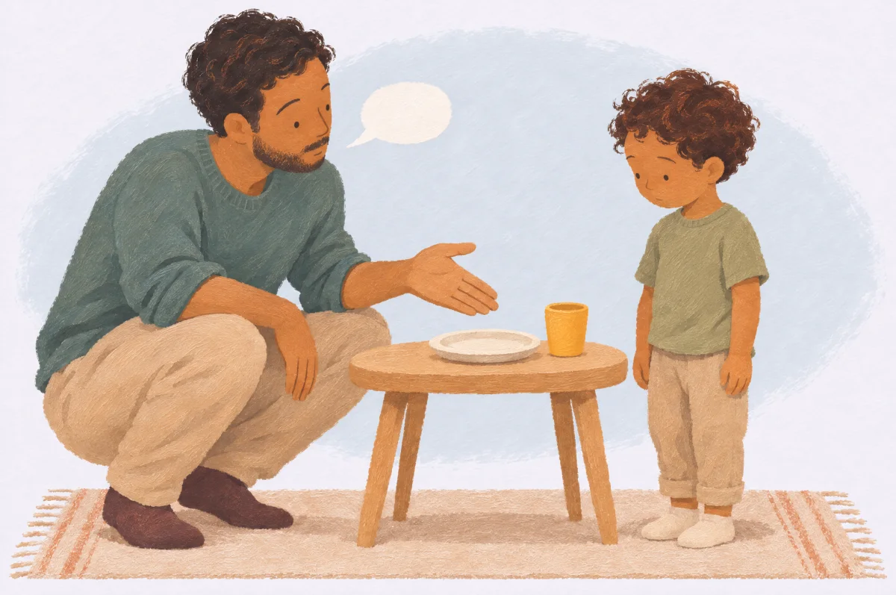
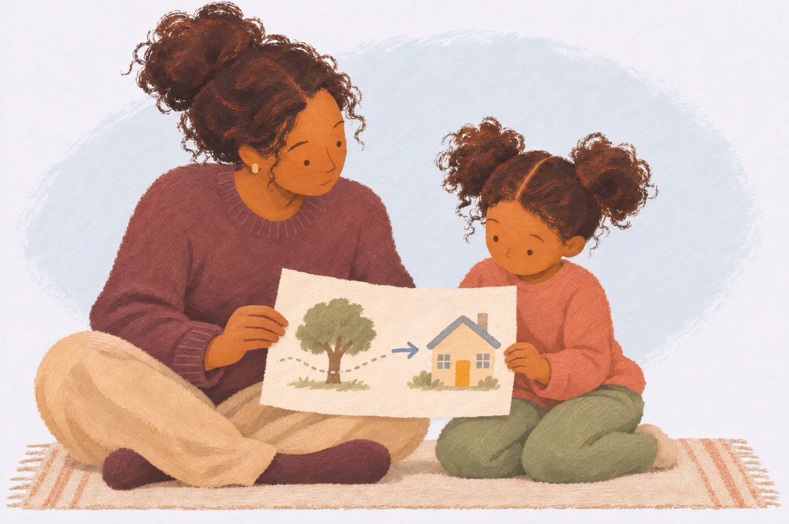
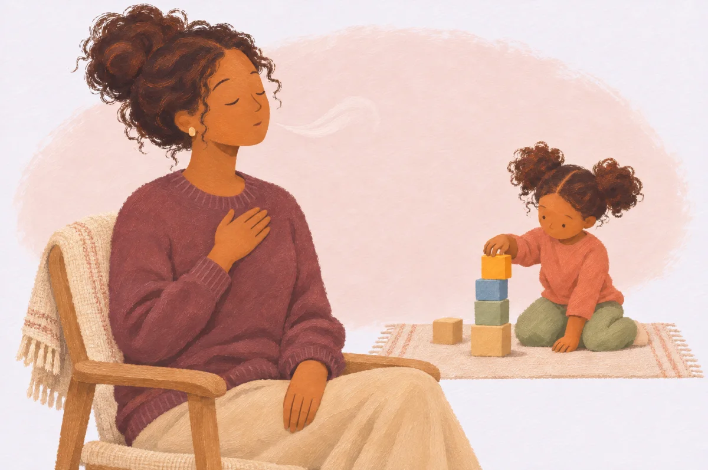
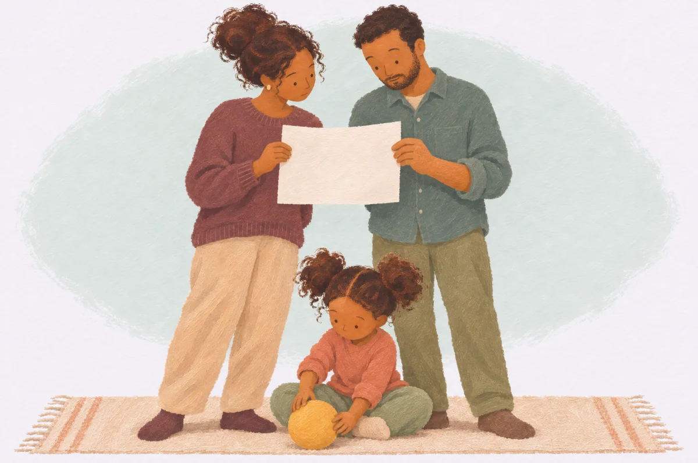
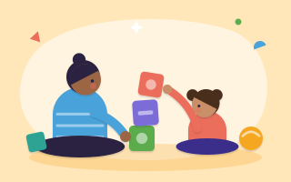
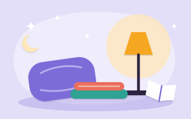
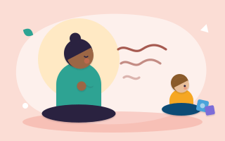

Colagem de papel
Estudo anterior. Desde 18/11/2026 o estilo do produto é o guache: veja Ilustração. Imagens no estilo de colagem de papel fotografada de cima. Cada card tem a sua cena. São geradas por IA, no Higgsfield, a partir de uma referência de estilo nossa, e há um vetor de reserva para cada uma.
O estilo

- As imagens são geradas por IA. Nunca diga que foram feitas à mão; o app informa isso na tela Ajuda.
- Pedaços de papel grosso e fosco, com fibra à vista, corte de tesoura levemente torto e sombra curta de contato.
- Pessoas em recorte: corpo em arco, cabeça redonda, um olho e uma bochecha. Sem boca, sem nariz.
- Quando fazem algo juntos, o adulto está na altura da criança. Ninguém segura nem puxa a criança.
- Tons de pele e cabelos variados em cada conjunto. Roupas e cores não marcam gênero.
- Fundo na cor clara do desafio, com uma forma grande em off-white atrás e três retalhos pequenos nos cantos.
- Só a paleta do app. Nada de texto, letra, número ou logotipo dentro da imagem.
- Nenhum símbolo de diagnóstico. Objeto de apoio aparece como objeto da casa.
- Cena de card em 3:2. Entrada, boas-vindas e vazios em recorte, com fundo transparente.
Biblioteca
0 cenas de card e 0 imagens gerais. O arquivo ilustracoes/manifesto.json liga cada uma ao seu card, com a descrição para leitor de tela.
Brincar e participar
brincar-escolha-livre
brincar-em-paralelo
brincar-desenho-livre
brincar-faz-de-conta
brincar-convite-verbal
brincar-observar-preferenciasRotinas e transições

transicoes-objeto-familiar
transicoes-duas-figuras
transicoes-frase-curta
transicoes-mudanca-combinada
transicoes-menos-estimulos
transicoes-preparar-saidaPreparar a noite

noite-preparar-sequencia
noite-livro-escolhido
noite-organizar-ambienteFrustrações e emoções

emocoes-acolher-sem-cobrar
emocoes-nomear-com-cuidado
emocoes-pausa-do-adultoPequenas autonomias

autonomia-guardar-um-item
autonomia-duas-roupas
autonomia-dividir-tarefaCuidadores em sintonia

cuidadores-um-combinado
cuidadores-anotar-sequencia
cuidadores-rever-expectativaGerais, em recorte
Pedir uma imagem nova
Qualquer agente com o Higgsfield conectado consegue. Leva uns dois minutos e custa 2,75 créditos por imagem.
| Modelo | gpt_image_2_6, qualidade high, resolução 2k |
|---|---|
| Referência de estilo | O resultado do job 4e2cb16a-c588-458d-9ca6-cdeaed0674e6, passado em medias com o papel image_references |
| Proporção | 3:2 para card. 1:1 ou 4:3 para as gerais |
| Fundo | Card: fundo na cor do desafio. Gerais: background: "transparent" e, no texto, “isolated on a fully transparent background” |
| Custo | 2,75 créditos por imagem. O conjunto de hoje, com o piloto, custou cerca de 95 |
| Outros modelos testados | nano_banana (1 crédito) e flux_3_image (3 créditos): ficaram abaixo no papel e na fidelidade |
O texto do pedido
Troque só o que está entre os sinais. O texto vai em inglês, porque o modelo responde melhor.
Handmade cut-paper collage in exactly the style of the reference image, photographed from above: flat pieces of thick matte colored paper with visible paper fiber, slightly imperfect scissor-cut edges, soft contact shadows. People are simple paper figures: arch-shaped body, round head, one dot eye, one soft pink cheek, no mouth, no nose.
SCENE: <quem aparece, com cabelo, pele e roupa> <o que cada um faz> <objetos da cena>.
Background: one sheet of <cor clara do desafio> paper <hex> with a large off-white organic paper shape behind the subject and a soft oval of paper as the floor; three tiny paper confetti scraps near the corners.
Palette only: deep plum #2A2140, mango #F6A723, coral #EB6E5B, sky blue #4AA3DA, lilac #7C6CD8, leaf green #5CAB4E, teal #2EA393, off-white, warm brown skin tones.
Horizontal 3:2, whole scene inside the frame with generous margins. No text, letters, numbers, logos, outlines, gradients, or glossy 3D look.Fundo de cada desafio
| Desafio | Texto do fundo |
|---|---|
| Brincar e participar | pale mango-yellow paper #FFE7BA |
| Rotinas e transições | pale sky-blue paper #D6EBF8 |
| Preparar a noite | pale lilac paper #E4DFF8 |
| Frustrações e emoções | pale coral-pink paper #FBDDD5 |
| Pequenas autonomias | pale green paper #DDEFD3 |
| Cuidadores em sintonia | pale teal paper #D2EEE8 |
Pessoas, para variar
- Adultos: coque escuro e pele morena; cabelo crespo curto e pele escura; cabelo castanho longo e pele clara; cabelo grisalho curto e pele clara; cabeça raspada e pele escura.
- Crianças: dois coques castanhos; cabelo cacheado curto e pele escura; cabelo castanho-claro curto e pele clara; chanel preto e pele morena.
- Num conjunto de três cards, não repita a mesma dupla.
Depois de gerar
- Confira: sem texto, sem rosto detalhado, só a paleta, cena inteira dentro da moldura, ninguém segurando a criança.
- Salve o PNG em
ilustracoes/higgsfield/originais/<id-do-card>.png(gerais com o prefixogeral-). - Rode
sh ilustracoes/higgsfield/processar.sh: ele grava o arquivo leve do app e a matriz. - Escreva a descrição em
ilustracoes/higgsfield/cenas.jsone o job emregistro.json. - Rode
node ilustracoes/_fonte/gerar.mjspara atualizar o manifesto.
Avatares e reserva
Os avatares das crianças são vetor: diferem pela forma, não só pela cor. Cada card também guarda um vetor da cena, usado se a imagem em papel faltar.

familias/brincar.svg
familias/noite-2.svg
familias/emocoes-3.svgfamilias/cuidadores-2.svg